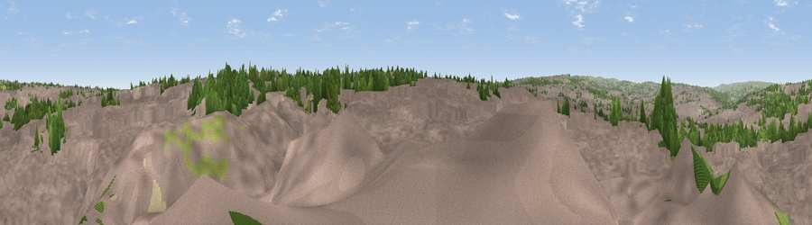

Viewpoint near Bradford
#35140 in England · top 77% of its area beats it · near Bradford · access?Where it is
The exact computed spot (SE 17925 32075). Click the marker for map links.
Public access: no public right of way or access land is recorded at this exact spot — it may be on private land. Computed from Natural England's CRoW access layer and OpenStreetMap rights of way — not the legal definitive map. Always verify locally.
The view, rendered

A 360° render of this exact spot computed from the terrain model, tree cover and land cover — summer colours, afternoon light, calibrated against photographs of famous viewpoints. Real trees, hedges and buildings will differ in detail.
The panorama
Grey silhouette: terrain skyline in each direction (720 bearings, Earth curvature and refraction included). Dashed green: skyline with trees (+15 m) and buildings (+8 m) as obstacles. Blue strip: how far the ground is visible on each bearing.
Where the view opens
Wedge length = distance to the farthest visible ground on that bearing (vegetation-aware). Rings at 10, 25 and 50 km.
What fills the view
84% built-up · 11% woodland · 5% grassland
Angular shares of the visible panorama (visual magnitude), not map area. Landscape diversity 0.24 (0–1 Shannon).
Key numbers
More beautiful places nearby
The staircase of upgrades: each row has a higher view potential than everything closer. Driving times are estimates from straight-line distance, calibrated against real road routing — check an actual route before setting out.
| Place | Direction | Drive | Score |
|---|---|---|---|
| Viewpoint near Bradford | NNW · 2 km | ~6 min | 45.5 |
| Viewpoint near Birkenshaw | SSE · 3 km | ~8 min | 50.5 |
| Viewpoint near Calverley | NNE · 4 km | ~9 min | 50.7 |
| Viewpoint near Shelf | W · 5 km | ~12 min | 53.0 |
| Viewpoint near Wrose | NNW · 5 km | ~12 min | 66.5 |
| Viewpoint near Baildon | NNW · 9 km | ~17 min | 70.4 |
| Rawdon Billing | NNE · 9 km | ~17 min | 72.7 |
| Viewpoint near Otley | N · 12 km | ~23 min | 77.5 |
53.78469, -1.72943 · source: screening · position refined by local search. Computed location — check access rights before visiting.